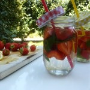
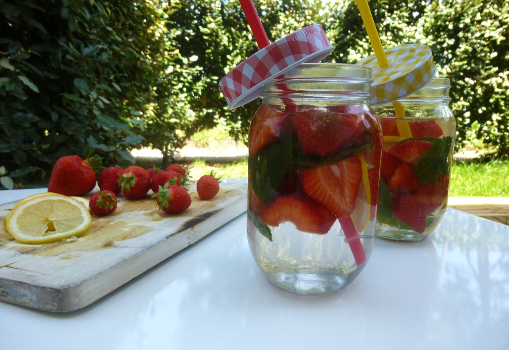

Dextox Water

Ingrédients
- fraises - 250 g
- citron - 1
- menthe - 10 feuilles
Instructions
- Couper les fraises en deux et le citron en tranches
- Nettoyer les feuilles de menthe et en ajouter 5 dans chaque verre
- Dans de grand bocaux (les miens viennent de chez casa) mettre les fruits et la menthe
- Rajouter de l'eau (plate ou petillante) jusqu'en haut du verre, fermer
- Laisser infuser minimum 2h
- Déguster frais!
